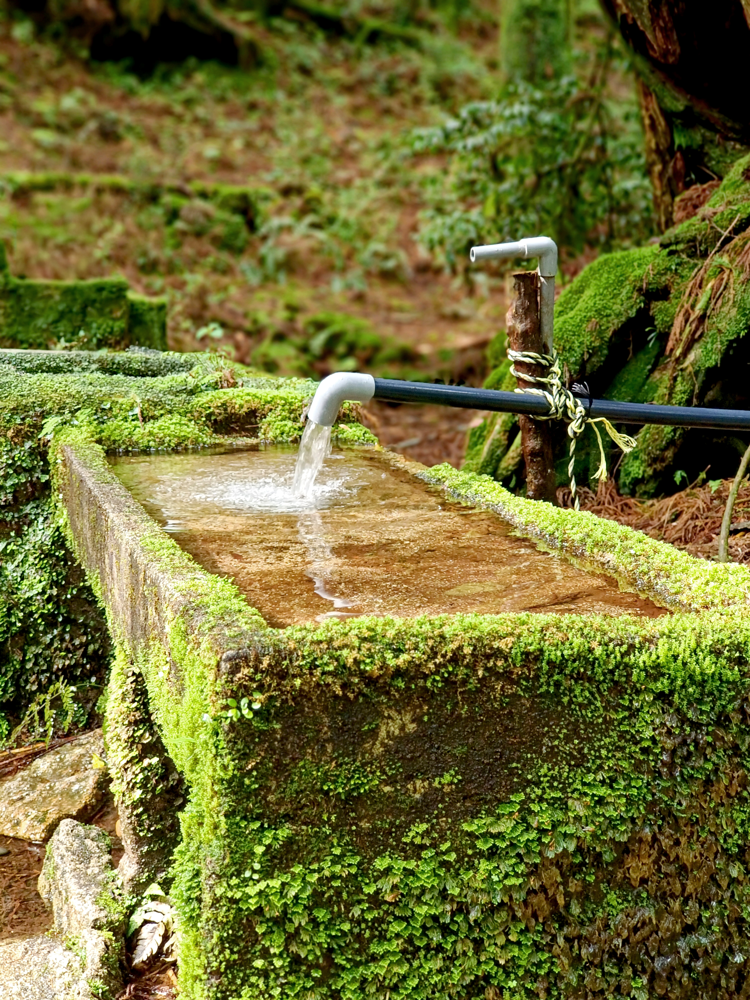
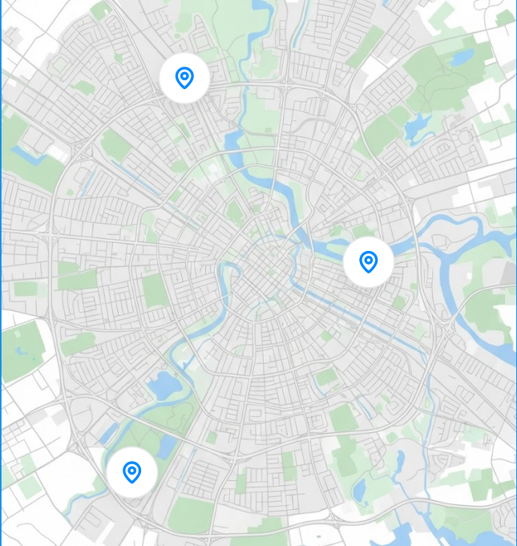

Localización de Puntos Hídricos
Geolocalización en tiempo real de fuentes de agua potable, dispensadores y puntos de abastecimiento seguro con filtros de búsqueda avanzados.
ODS 6 · Agua limpia y saneamiento
Presentamos iniciativas digitales e innovadoras orientadas a promover el uso responsable, la conservación del agua y la gestión sostenible en hogares y comunidades.
Consultar Puntos Hídricos Conocer la iniciativaPlataforma digital para la gestión comunitaria del agua.


Sobre nosotros
Somos una iniciativa comprometida con la gestión sostenible de los recursos hídricos, promoviendo el uso responsable y la conservación del agua en hogares, campos universitarios y comunidades.
Impulsar herramientas digitales accesibles e inclusivas que permitan a ciudadanos y gestores hídricos monitorear, conservar y reducir el desperdicio de agua potable en su vida cotidiana y entorno comunitario.
Ser la plataforma digital referente en América Latina para la gestión transparente y comunitaria del agua, garantizando un acceso seguro, equitativo y sin barreras físicas o tecnológicas.
Nuestras soluciones
Geolocalización en tiempo real de fuentes de agua potable, dispensadores y puntos de abastecimiento seguro con filtros de búsqueda avanzados.
Plataforma colaborativa para notificar caños defectuosos y desbordes de tanques, reduciendo pérdidas físicas y sobrecostos.
Autonomía técnica para recopilar y consultar datos sobre fuentes de agua en zonas con conectividad limitada.
Iniciativas en curso
Desarrollo de herramientas de búsqueda e identificación del estado operacional de infraestructuras comunitarias para garantizar agua apta para el consumo.
Mecanismos de sensibilización y control ciudadano para prevenir fugas invisibles por goteo y descuidos en viviendas y vecindarios.
Diseño de software adaptativo con modo oscuro para trabajo nocturno, indicaciones por voz y cumplimiento de las normas WCAG 2.1.
HU · Consulta interactiva de puntos hídricos
Busca por nombre, ubicación o estado, y filtra los resultados por tipo de punto.
Mostrando 3 puntos de demostración.
Punto HD-01 · Dispensador público
Ubicación: Campus Central.
Estado: Operativo y filtrado. Agua potable con control bacteriológico al día; ubicación limpia y accesible.

Punto HD-02 · Tanque comunitario
Ubicación: Sector 3.
Estado: Abastecido al 85 %. Mantenimiento programado para fin de mes. Agua no tratada: hervir antes de consumir.
Punto HD-03 · Red de riego y fugas
Ubicación: zona vecinal.
Estado: Fuga menor detectada. Incidencia registrada; cuadrilla notificada para reparación.
Reportar una incidenciaNo se encontraron puntos con esos criterios. Prueba otra búsqueda o categoría.
Información de demostración; no corresponde a datos en tiempo real.
Investigación y prototipado
Explora el diseño de nuestras interfaces móviles y las actividades de investigación con comunidades y estudiantes.


Experiencias y conciencia
"En mi hogar la mayoría ahorramos agua. Decidimos cambiar un caño que goteaba en el tercer piso porque sabíamos que gota a gota el recurso se pierde."
— Anderson Gutiérrez (Estudiante de Ingeniería)
"Llevo siempre mi termo a la universidad y consumo toda el agua para no desperdiciar nada. Me motiva cuidar el recurso."
— Andrés Láz (Estudiante de Arquitectura)
"A mayor desperdicio el monto del recibo aumenta, por eso evito dejar correr el agua al lavar vajillas o asearme."
— Esteban Quito (Estudiante de Software)
HU · Reporte e interacción
Envíanos tus datos o la ubicación de un caño defectuoso o fuga para notificar al equipo gestor.
Formulario de prueba con validación HTML5 para simulación de entrega.
El contexto de nuestra propuesta
Video general sobre los ODS de UNESCO en español como marco de referencia para LIVWater.
Abrir el video en YouTube si no se reproduce aquí.
Usamos el ODS 6 como punto de partida para proponer herramientas digitales de acceso universal, monitoreo y reporte de incidentes en el agua.